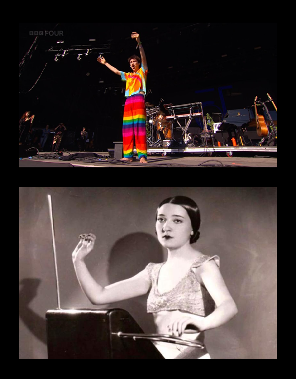
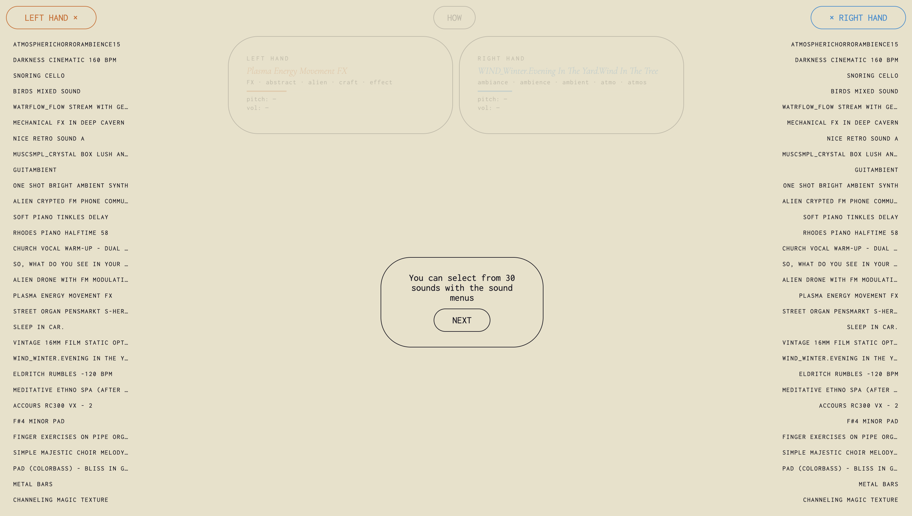
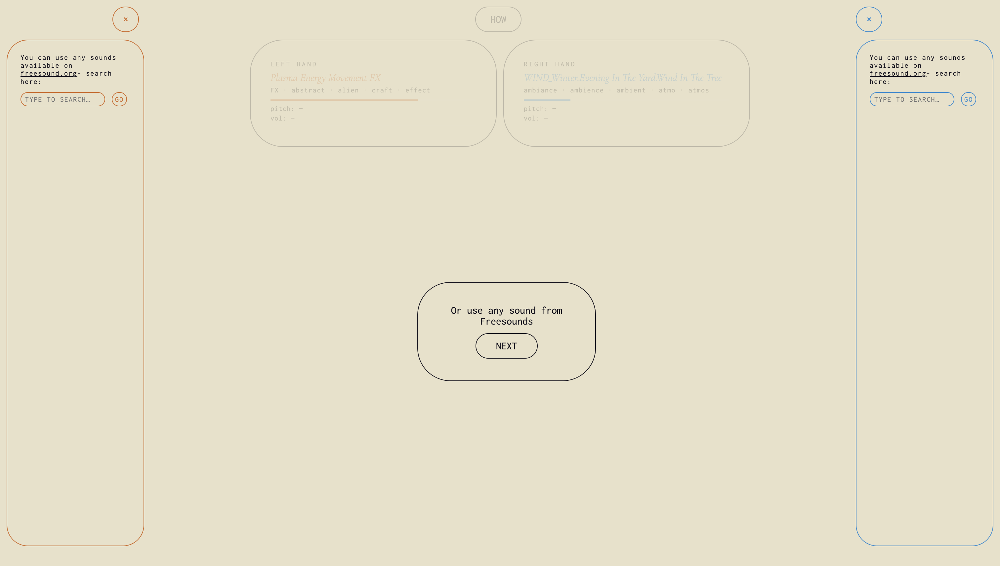
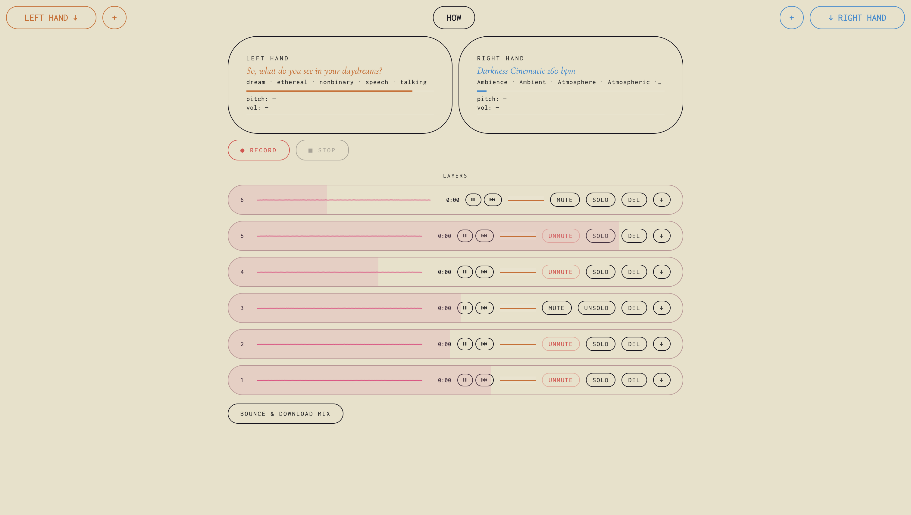
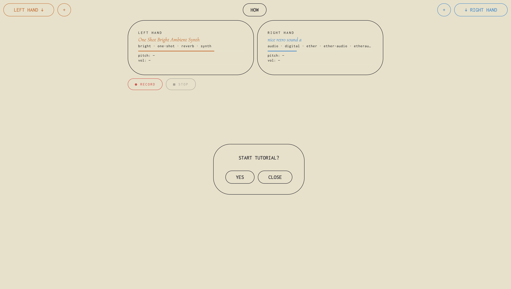
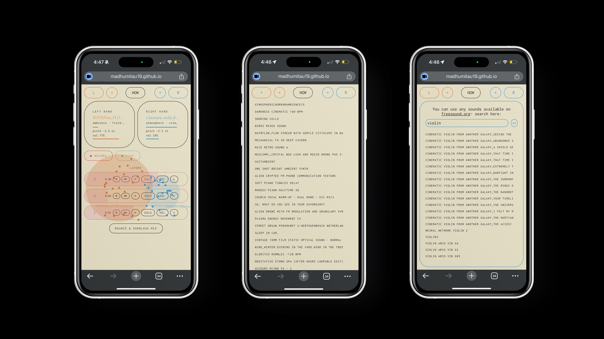

About
Hi! I’m Madhu. I’m a graphic designer from Bangalore, India, currently getting my BFA at Parsons School of Design in NYC. I love working with branding, publications and the web. I also draw, paint, and dabble in photography. Right now I’m interested in sound, photobooks and film title sequences. When
I’m not making things, I watch a ton of movies, read, sing and watch F1 races. ♥
You can reach me here- madhumitau19@gmail.com, Instagram, LinkedIn
Resume
EXPERIENCE
NIVIOUR
Freelance Designer
Produced a comprehensive brand deck covering typography, color systems, imagery guidelines, and tone of voice, to refine and unify brand identity across web, social media, packaging, and marketing materials.
Parsons Creative Consulting Club
Communications Manager + Brand Designer
Developed a complete brand identity for the student organization. Apply branding to socials and print promotional material.
New School Free Press
Designer
Created custom graphics for published articles, working with writers and editors to visually supplementing editorial content.
nDada Public
Intern
Produced original illustrations and graphics for website and print. Managed and updated the official website with new content and visual assets.
SKILLS
Adobe CC (Photoshop, InDesign, Illustrator, After Effects, Premiere Pro, Lightroom)
Figma
HTML/CSS/Javascript
Cavalry
Webflow CMS
Bookbinding
Illustration
Photography
AWARDS/EXHIBITIONS
PARSONS X IMPACT: SEAPORT SATELLITE | NYCxDesign
EJM Foundation 2nd Annual PhotograpHERS Exhibition: HER LENS, HER STORY
LENSCRATCH- A Summer of Hope Exhibition | Part VI
Parsons Notes, Parsons First Year Journal





